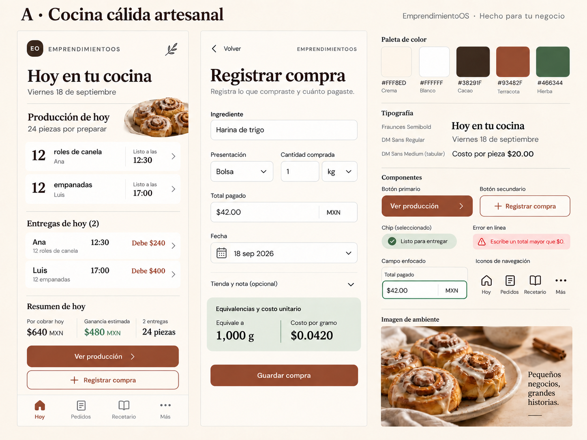
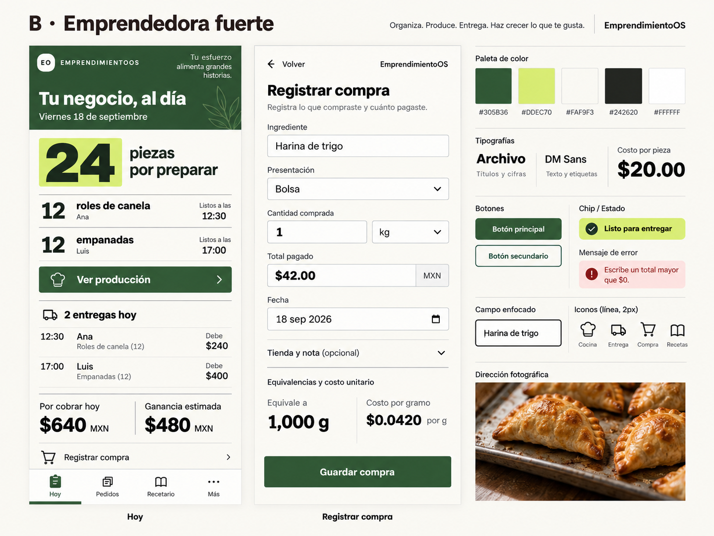
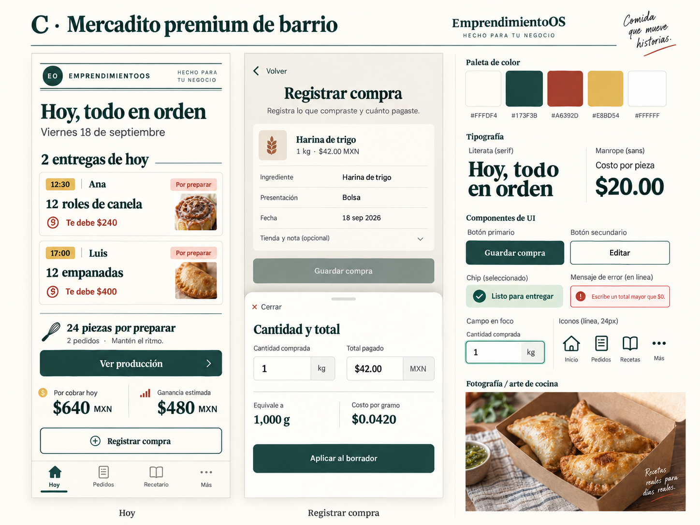

A · Cocina cálida artesanal
Una agenda de cocina cálida: agrupa lo que necesitas preparar y después ordena las entregas.

A favor: cercanía, lectura tranquila y oficio culinario.
A vigilar: desplazamiento y visibilidad de lo urgente.
B · Emprendedora fuerte
Una lista de trabajo contundente: cantidad pendiente, acción inmediata y dinero legible.

A favor: escaneo rápido y sensación de control.
A vigilar: mantener calidez sin aumentar densidad.
C · Mercadito premium de barrio
Comandas con nombre y hora: conecta cada entrega con la persona y el saldo pendiente.

A favor: relación clara entre pedido, persona y entrega.
A vigilar: pasos de edición y crecimiento de la lista de pedidos.
De la presentación a la operación
El shell comunica con calidez, pero su acción principal conduce a más información. El resumen operativo queda abajo y todavía no hay formularios de dominio. Se revisaron composición, navegación y ancho móvil sobre los assets compilados existentes, sin ejecutar Laravel.
{kind=link}
{kind=link}
{kind=link}
Leer auditoría completa y límites de evidencia · Índice del paquete